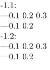

Syntax (autogenerated)
| \recursedepth |
Syntax
| \recursedepth |
Description
The nesting depth in the case of nested \dorecurse, \dostepwiserecurse, and \doloop.
Example
-
\dorecurse{2}{ \recursedepth.\recurselevel:\crlf ---\dorecurse{3} {\recursedepth.\recurselevel\ } \crlf ---\doloop {\recursedepth.\recurselevel\ \ifnum \recurselevel=2 \exitloop \fi} \crlf }
- 
See also
- Loops and Recursion
-
Looping a fixed number of times
- \dorecurse for iterating from 1 to n.
- \dostepwiserecurse for iteration with arbitrary start, end, and step.
- \recurselevel for the iteration number.
- \recursedepth for the iteration depth, in the case of nested \dorecurse and co.
-
'While' loops with exit conditions
- \doloop for a loop that repeats until exited.
- \exitloop to exit a loop.
- \exitloopnow to immediately exit a loop.
- \recurselevel to know which iteration the loop is in.
- \recursedepth to know how many nested loops deep we are.
- \input is also often used to produce dummy text.
- LuaTeX for heavier-duty looping and iterating.
Help from ConTeXt-Mailinglist/Forum
All issues with: